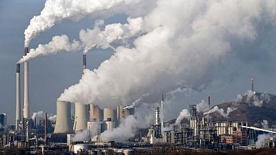

What Is Air Pollution?
With the planet fastly evolving alongside us comes a wave of detrimental side affects, one being air pollution. Air pollution is the release of pollutants in the air, which are greatly harmful not only for us humans but for the entire planet. According to the World Health Organization (WHO), nearly seven million deaths a year are related to air pollution. Nine out of ten human beings breathe air that exceeds the WHO's guideline limits for pollutants. Those who live in low and middle-income countries suffer the most.
According to John Walke, director of the Clean Air Project, "Most air pollution comes from energy use and production. Burning fossil fuels releases gases and chemicals into the air. Air pollution in the form of carbon dioxide and methane raises the earth's temperature. Another type of air pollution, smog, is then worsened by that increased heat, forming when the weather is warmer and there's more ultravioelet radiation."
Because highways and polluting facilities have been historically sited in low-income neighborhoods and communities of color, the negative effects of this pollution have been disproportionately experienced by the people who live in these communities. This puts them at a much higher risk for respiratory disease, neurological damage, cancer, and death.

Sources used:
Source 1